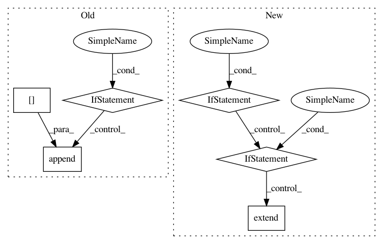

7c50d9677032e4ea15c5c5ca5c96a85994aa39a4,nlu_dataset/assistant_dataset.py,AssistantDataset,json,#AssistantDataset#,36
Before Change
for dataset in intent_datasets_json.values():
for entity, data in dataset["entities"].items():
if entity not in entities:
entities[entity] = data
elif entity not in BUILTIN_ENTITIES:
if data["data"]:
entities[entity]["data"].append(data["data"])
return dict(language=self.language,
intents=intents,
entities=entities)
After Change
ents = deepcopy(self.entities)
for dataset in self.intent_datasets:
for ent_name, ent in iteritems(dataset.entities):
if ent_name not in ents:
ents[ent_name] = ent
elif ent_name not in BUILTIN_ENTITIES:
ents[ent_name].utterances.extend(ent.utterances)
ents = {
entity_name: entity.json
for entity_name, entity in iteritems(ents)
}
In pattern: SUPERPATTERN
Frequency: 3
Non-data size: 6
Instances
Project Name: snipsco/snips-nlu
Commit Name: 7c50d9677032e4ea15c5c5ca5c96a85994aa39a4
Time: 2018-02-15
Author: clement.doumouro@gmail.com
File Name: nlu_dataset/assistant_dataset.py
Class Name: AssistantDataset
Method Name: json
Project Name: dmlc/gluon-nlp
Commit Name: 7809052793d5c014b417790d4fb199706d14619b
Time: 2018-05-24
Author: szha@users.noreply.github.com
File Name: gluonnlp/data/dataset.py
Class Name: LanguageModelDataset
Method Name: bptt_batchify
Project Name: interactiveaudiolab/nussl
Commit Name: 734e0fc83fc1abdfd3f02dea791efb89dcaf90f8
Time: 2020-03-01
Author: prem@u.northwestern.edu
File Name: nussl/datasets/transforms.py
Class Name: SumSources
Method Name: __call__